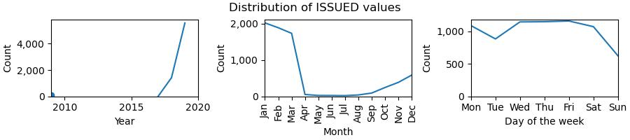
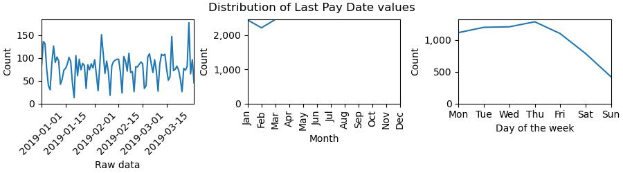

This report has been produced by applying the vizdataquality package to investigate data quality of a dataset about fines that were issued for all of the car parks in a city, during a three month period. The data is (c) Leeds City Council, 2019, https://datamillnorth.org/dataset/v8ggw/off-street-parking-fines, and is licensed under the terms of the Open Government Licence (https://www.nationalarchives.gov.uk/doc/open-government-licence/version/2/).
The first five workflow steps investigate data quality and clean it in a structured manner. The 6th step profiled the cleaned data.
Each row of the data file ends with a comma, which produces an empty, unnamed column. That column has been removed in this step.
Sometimes datasets use special values (e.g., large integer values like 999, or old dates like 1 January 1800) to indicate values that are missing, invalid, etc. No such special values were found in this dataset.
None of the variables are missing any values.
A plot of each variable's value lengths revealed issues with LOCATION and CONTRAVENTION. Detailed investigation showed that some LOCATION and CONTRAVENTION values contain trailing spaces, so the data has been cleaned by stripping those trailing spaces.
The two date variables (ISSUED and Last Pay Date) only contain year, month and day (not time).
The PCN (the ID for a penalty charge notice) is not unique. Each PCN appears 1 to 5 times.
There are two values of FINE, but an unexpected number of different Balance and Total Paid values.
It would be logical to expect FINE - Total Paid = Balance. However, that is only true for 785 (11%) of the records. For thousands of other records the difference is the whole value of the FINE (50 or 75 pounds) or half its value (25 or 35 pounds). Other records have unusual differences (e.g., 49.06).
Table 1 shows the number of rows and columns in the dataset.
| Dataset | Number of rows | Number of columns |
|---|---|---|
| ../examples/Quarter 4 201819.csv | 7108 | 8 |
Table 1: The size of the dataset.
Table 2 shows information about each variable.
| Variable | Data type | Example value |
|---|---|---|
| PCN | object | LS04961495 |
| ISSUED | datetime64[ns] | 2019-02-14 00:00:00 |
| LOCATION | object | WOODHOUSE LANE CP - CITY |
| CONTRAVENTION | object | 83 WITHOUT DISPLAYING A VALID TICKET |
| FINE | int64 | 50 |
| Last Pay Date | datetime64[ns] | 2019-03-28 00:00:00 |
| Total Paid | float64 | 25.0 |
| Balance | float64 | 0.0 |
Table 2: Data types and example values.
Figure 1 shows that every variable is complete, but none are unique for every record.
Figure 1: The number of values and unique values in each variable.
Figure 2 shows that 1430 PCNs occur once, and the other 2511 PCNs each occur 2 - 5 times.
Figure 2: Number of occurrences of PCNs.
Figure 3 shows that some car parks have only one or two records, whereas one car park has more than 1000.

Figure 3: Number of records for each LOCATION.
Figure 4 shows that Contravention 83 occurs in more records than all of the other contraventions put together, some of which only occur once or twice.

Figure 4: Number of records for each CONTRAVENTION.
Figure 5 shows that most issued dates are from the past two years, but a few are from 10 years ago.

Figure 5: Distribution of ISSUED dates.
Figure 6 shows that, as expected, all of the Last Pay Dates are in Jan - Mar 2019.

Figure 6: Distribution of Last Pay Date dates.
Figure 7 shows that FINE is 50 or 70 pounds, but there are many unexpected values of Total Paid and Balance.

Figure 7: Value counts for the fine, total paid and balance.
Table 3 shows that only for fines paid during the normal time period (no discount or penalty) is the following rule true: Balance = FINE - Total Paid.
| FINE, Total Paid & Balance | Balance | 0-14 days | 15-56 days | 57-70 days | 71+ days |
|---|---|---|---|---|---|
| Consistent | Negative | 0 | 0 | 0 | 0 |
| Consistent | Zero | 0 | 892 | 0 | 0 |
| Consistent | Positive | 0 | 6 | 0 | 0 |
| Inconsistent | Negative | 0 | 0 | 1 | 6 |
| Inconsistent | Zero | 4753 | 0 | 254 | 693 |
| Inconsistent | Positive | 328 | 0 | 62 | 113 |
Table 3: Relationship between Balance, FINE, Total Paid and the difference between the ISSUED and Last Pay Date.
This report was created using the vizdataquality Python package.